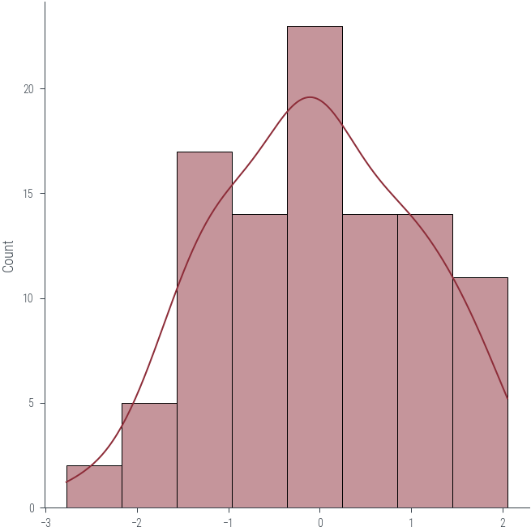
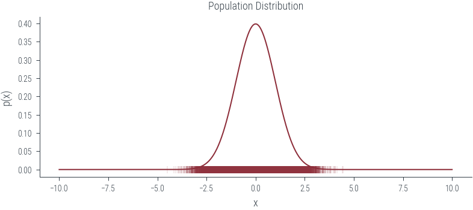
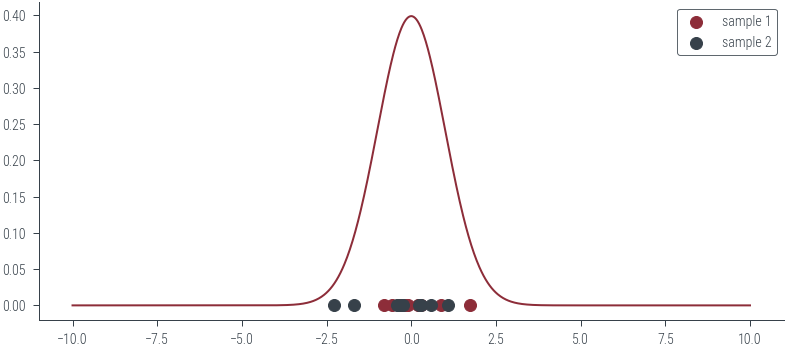
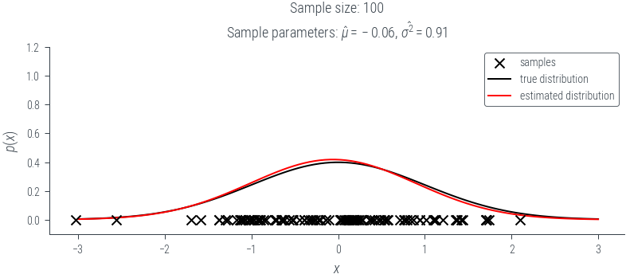
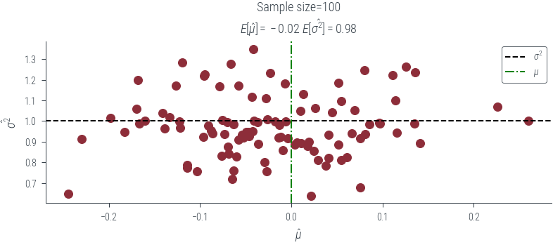
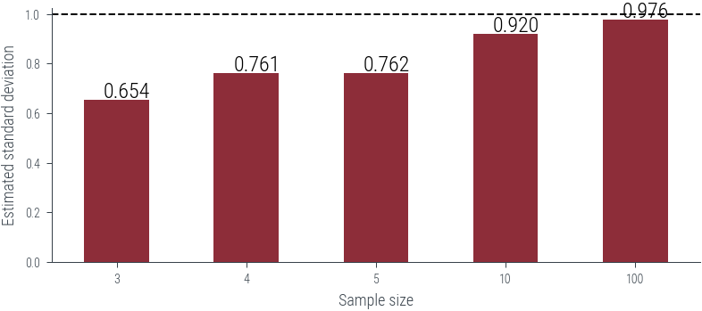
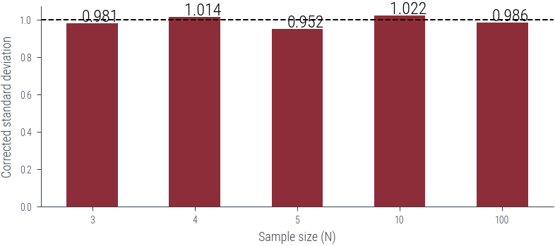

import torch
import numpy as np
import matplotlib.pyplot as plt
import pandas as pd
import seaborn as sns
%matplotlib inline
# Retina display
%config InlineBackend.figure_format = 'retina'Biased and Unbiased Estimators
Biased and Unbiased Estimators
from tueplots import bundles
plt.rcParams.update(bundles.beamer_moml())
# Also add despine to the bundle using rcParams
plt.rcParams['axes.spines.right'] = False
plt.rcParams['axes.spines.top'] = False
# Increase font size to match Beamer template
plt.rcParams['font.size'] = 16
# Make background transparent
plt.rcParams['figure.facecolor'] = 'none'dist = torch.distributions.Normal(0, 1)
# Generate data
data = dist.sample((100,))
# Plot data
_ = sns.displot(data, kde=True)/home/nipun.batra/miniforge3/lib/python3.9/site-packages/seaborn/axisgrid.py:88: UserWarning: This figure was using constrained_layout, but that is incompatible with subplots_adjust and/or tight_layout; disabling constrained_layout.
self._figure.tight_layout(*args, **kwargs)
torch.std??Docstring:
std(input, dim=None, *, correction=1, keepdim=False, out=None) -> Tensor
Calculates the standard deviation over the dimensions specified by :attr:`dim`.
:attr:`dim` can be a single dimension, list of dimensions, or ``None`` to
reduce over all dimensions.
The standard deviation (:math:`\sigma`) is calculated as
.. math:: \sigma = \sqrt{\frac{1}{N - \delta N}\sum_{i=0}^{N-1}(x_i-\bar{x})^2}
where :math:`x` is the sample set of elements, :math:`\bar{x}` is the
sample mean, :math:`N` is the number of samples and :math:`\delta N` is
the :attr:`correction`.
If :attr:`keepdim` is ``True``, the output tensor is of the same size
as :attr:`input` except in the dimension(s) :attr:`dim` where it is of size 1.
Otherwise, :attr:`dim` is squeezed (see :func:`torch.squeeze`), resulting in the
output tensor having 1 (or ``len(dim)``) fewer dimension(s).
Args:
input (Tensor): the input tensor.
dim (int or tuple of ints): the dimension or dimensions to reduce.
Keyword args:
correction (int): difference between the sample size and sample degrees of freedom.
Defaults to `Bessel's correction`_, ``correction=1``.
.. versionchanged:: 2.0
Previously this argument was called ``unbiased`` and was a boolean
with ``True`` corresponding to ``correction=1`` and ``False`` being
``correction=0``.
keepdim (bool): whether the output tensor has :attr:`dim` retained or not.
out (Tensor, optional): the output tensor.
Example:
>>> a = torch.tensor(
... [[ 0.2035, 1.2959, 1.8101, -0.4644],
... [ 1.5027, -0.3270, 0.5905, 0.6538],
... [-1.5745, 1.3330, -0.5596, -0.6548],
... [ 0.1264, -0.5080, 1.6420, 0.1992]])
>>> torch.std(a, dim=1, keepdim=True)
tensor([[1.0311],
[0.7477],
[1.2204],
[0.9087]])
.. _Bessel's correction: https://en.wikipedia.org/wiki/Bessel%27s_correction
Type: builtin_function_or_methodnp.std(data.numpy()), pd.Series(data.numpy()).std(), torch.std(data), torch.std(data, correction=0)(1.0807172, 1.0861616, tensor(1.0862), tensor(1.0807))# Population
norm = torch.distributions.Normal(0, 1)
xs = torch.linspace(-10, 10, 1000)
ys = torch.exp(norm.log_prob(xs))
plt.plot(xs, ys)
plt.title('Population Distribution')
plt.xlabel('x')
plt.ylabel('p(x)')
plt.savefig('../figures/mle/population-dist.pdf')
population = norm.sample((100000,))
plt.scatter(population, torch.zeros_like(population), marker='|', alpha=0.1)
plt.savefig('../figures/mle/population.pdf')
plt.plot(xs, ys)
sample_1 = population[torch.randperm(population.size(0))[:10]]
sample_2 = population[torch.randperm(population.size(0))[:10]]
plt.scatter(sample_1, torch.zeros_like(sample_1),label='sample 1')
plt.scatter(sample_2, torch.zeros_like(sample_2), label='sample 2')
plt.legend()
plt.savefig('../figures/mle/sample.pdf')
norm = torch.distributions.Normal(0, 1)
population = norm.sample((100000,))
def plot_fit(seed, num_samples):
torch.manual_seed(seed)
# Select a random sample of size num_samples from the population
data = population[torch.randperm(population.shape[0])[:num_samples]]
mu = data.mean()
sigma_2 = data.var(correction=0)
# Plot data scatter
plt.scatter(data, torch.zeros_like(data), color='black', marker='x', zorder=10, label='samples')
# Plot true distribution
x = torch.linspace(-3, 3, 100)
plt.plot(x, norm.log_prob(x).exp(), color='black', label='true distribution')
# Plot estimated distribution
est = torch.distributions.Normal(mu, sigma_2.sqrt())
plt.plot(x, est.log_prob(x).exp(), color='red', label='estimated distribution')
plt.legend()
plt.title(f"Sample size: {num_samples}\n" +fr"Sample parameters: $\hat{{\mu}}={mu:0.02f}$, $\hat{{\sigma^2}}={sigma_2:0.02f}$")
plt.ylim(-0.1, 1.2)
plt.xlabel("$x$")
plt.ylabel("$p(x)$")
plt.savefig(f"../figures/mle/biased-mle-normal-{num_samples}-{seed}.pdf", bbox_inches='tight')
return mu, sigma_2N_samples = 100
mus = {}
sigmas = {}
for draw in [3, 4, 5, 10, 100]:
mus[draw] = torch.zeros(N_samples)
sigmas[draw] = torch.zeros(N_samples)
for i in range(N_samples):
plt.clf()
mus[draw][i], sigmas[draw][i] = plot_fit(i, draw)
for draw in [3, 4, 5, 10, 100]:
plt.clf()
plt.scatter(mus[draw], sigmas[draw])
plt.axhline(y=1, color='k', linestyle='--', label=r'$\sigma^2$')
plt.axvline(x=0, color='g', linestyle='-.', label=r'$\mu$')
plt.xlabel(r'$\hat{\mu}$')
plt.ylabel(r'$\hat{\sigma^2}$')
plt.legend()
plt.title(f'Sample size={draw}\n'+ fr'$E[\hat{{\mu}}] = {mus[draw].mean():0.2f}$ $E[\hat{{\sigma^2}}] = {sigmas[draw].mean():0.2f}$ ')
plt.savefig(f"../figures/mle/biased-mle-normal-scatter-{draw}.pdf", bbox_inches='tight')
#plt.clf()
df = pd.DataFrame({draw:
sigmas[draw].numpy()
for draw in [3, 4, 5, 10, 100]}).mean()
df.plot(kind='bar', rot=0)
plt.axhline(1, color='k', linestyle='--')
# Put numbers on top of bars
for i, v in enumerate(df):
plt.text(i - .1, v + .01, f'{v:.3f}', color='k', fontsize=12)
plt.xlabel("Sample size (N)")
plt.ylabel("Estimated standard deviation")
plt.savefig('../figures/biased-mle-variance-quality.pdf', bbox_inches='tight')
3 0.981293
4 1.014205
5 0.952345
10 1.022295
100 0.985779
dtype: float64df_unbiased = df*(df.index/(df.index-1.0))
df_unbiased.plot(kind='bar', rot=0)
plt.axhline(1, color='k', linestyle='--')
# Put numbers on top of bars
for i, v in enumerate(df_unbiased):
plt.text(i - .1, v + .01, f'{v:.3f}', color='k', fontsize=12)
plt.xlabel("Sample size (N)")
plt.ylabel("Corrected standard deviation")
plt.savefig('../figures/corrected-mle-variance-quality.pdf', bbox_inches='tight')